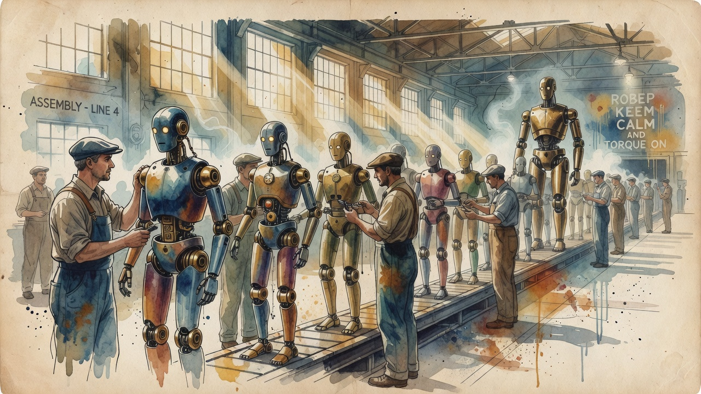

Humanoids, Mass-Produced
XPeng switches on the world's first automated humanoid robot production line
XPeng has started what it calls the world's first automated production line for advanced humanoid robots in Guangzhou, with more than 80% of core processes automated. Its IRON robot — 76 degrees of freedom and three in-house Turing AI chips rated at 2,250 TOPS — walked off the line, with mass production targeted for the end of 2026. The move lands as Tesla's Optimus program stalls.